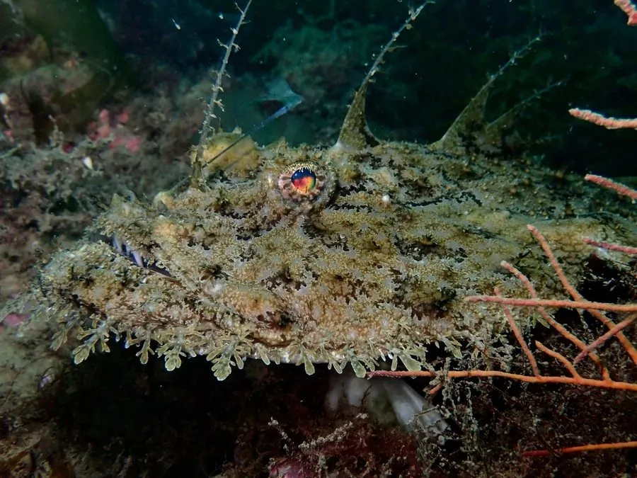

鱼类 · 动物界
鮟鱇 Lophius piscatorius

东北大西洋的底栖鮟鱇，头部巨大、口裂宽，背鳍第一棘特化成“钓竿”和“诱饵”，用来引诱猎物上钩。
- 分类
- 门脊索动物门纲辐鳍鱼纲目鮟鱇目科鮟鱇科属鮟鱇属
- 栖息环境
- 沙泥底质的大陆架和大陆坡，水深可达 1000 m
- 地理分布
- 东北大西洋、地中海和黑海
- 保护级别
- IUCN 无危（LC）；中国未列入国家重点保护野生动物名录
物种志
鮟鱇体呈扁平的卵圆形，头部特别大，口裂宽，牙齿尖锐并向后倾斜。体表光滑无鳞，体色灰褐、黄褐或黑褐色，常与海底泥沙相似。背鳍第一棘特化成细长的“钓竿”，末端有一个肉质“诱饵”，用来引诱猎物。成鱼体长一般 1–2 m，体重可达 20 kg 以上。
鮟鱇分布于东北大西洋、地中海和黑海，栖息在沙泥底质的大陆架和大陆坡，水深可达 1000 m。它是底栖伏击型捕食者，常把身体埋在泥沙中，只露出诱饵，等小鱼和甲壳类靠近时突然张口吞下。鮟鱇肉质紧实，鱼肝肥美，是欧洲重要的食用鱼。由于拖网捕捞和生长缓慢，其种群受到压力，目前 IUCN 评估为无危。
形态与习性
- 食性小鱼、甲壳类和头足类
- 体长一般 1–2 m
- 体重最大可达 20 kg 以上
- 捕食方式把身体埋在泥沙中，用诱饵引诱猎物
- 诱饵背鳍第一棘特化成“钓竿”，末端有肉质诱饵
- 经济价值肉质紧实，鱼肝肥美，是欧洲重要食用鱼
趣味知识
- 鮟鱇的“钓竿”由背鳍第一棘特化而成，末端有肉质诱饵。
- 它常把身体大半埋在泥沙里，只露出诱饵等待猎物。
- 鮟鱇的牙齿向后倾斜，猎物一旦被咬住就难以挣脱。